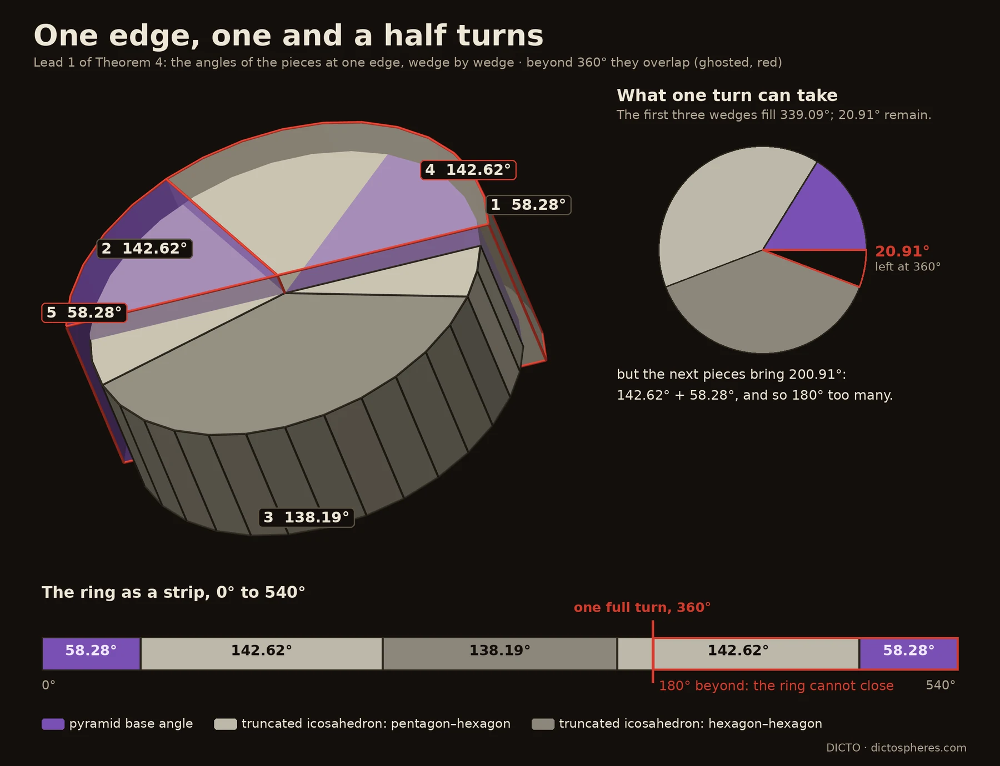

The edge-ring theorem for the two icosahedral pairs of the Fullerene Star paper, stated as formalised
sorry and only Lean's three standard axioms.Two kinds of pieces can balance each other's Dehn invariant in the whole and still be unable to sit together in space. Round any edge the angles must close one full turn. For these pieces the irrational parts of the angles cancel only after one and a half turns. The computer has checked every step of this argument.
Paper #117, From Dehn Packets to Scutoids: How the Fullerene Star Fills Space [1], is where the result was first found and proved by hand (its Theorem 4). The Dehn Canon, paper #113 [2], with its Lean entry PALOMAR-2026-11-20-000003 [3], is the base we build on. It supplies polytopes as solution sets of finitely many inequalities, and dihedral angles read from the sets. Its Lean files are included unchanged in this work, at the commit registered as [3].
The hand argument is known. Excluding pieces from a tiling by adding dihedral angles round an edge is the argument of Gabbrielli, Jiao and Torquato [4], who use it to show that no pair of regular polyhedra other than tetrahedra and octahedra fills space, periodically or not, face-to-face or not. The fact the argument needs, that the icosahedral angles are not rational multiples of π and are rationally independent, is in the angle basis of Conway, Radin and Sadun [5], who give the Dehn invariants of the Platonic and non-snub Archimedean solids in that basis. What is new here is the complete machine-checked proof: it covers similar copies of every piece (motions, reflections and positive scalings), the named helpers, any rational-angle convex pieces, and every locally finite tiling by convex polytopes, face-to-face or not. To our search (§7), no earlier machine-checked proof of a three-dimensional tiling impossibility by angles exists.
The formal entry stands alone: its statements are complete, and every hypothesis appears in them. This paper is its informal account. It contains exactly the statements that are formalised. Each one carries its Lean name and file, and the Lean text of each statement is printed beside it. The proofs are in the Lean files; here we give only their outline (§6).
How statements are marked. Formalised: the statement as worded is the Lean declaration named beside it. Every part is proved in the Lean files, with no sorry and only the axioms propext, Classical.choice and Quot.sound (§8). By hand: a statement whose proof, or some part of it, is not machine-checked. One remark carries this mark (Remark 8). All Lean names live in the namespace Packets, except the Canon's DehnCanon.Library definitions. R3 is EuclideanSpace ℝ (Fin 3).
Definition A (convex polytope). Formalised (Dehn Canon, DehnCanon.Library.sol, IsPoly). In a real inner product space E, sol a b is the set of x with ⟨ai, x⟩ ≤ bi for every index i. A set P is a convex polytope if it is bounded and equals sol a b for some finite family of vectors ai and numbers bi.
def sol {ι : Type} (a : ι → E) (b : ι → ℝ) : Set E := {x | ∀ i, ⟪a i, x⟫ ≤ b i}
def IsPoly (P : Set E) : Prop :=
Bornology.IsBounded P ∧ ∃ (ι : Type) (_ : Fintype ι) (a : ι → E) (b : ι → ℝ), P = sol a b
Definition B (tiling). Formalised (ConvexTiling, Lemma2.lean). A tiling of E by convex polytopes is a family of sets Pi, indexed by any type, such that each Pi is a convex polytope with an interior point, every point of E lies in some Pi, distinct tiles have disjoint interiors, and the family is locally finite: every point has a neighbourhood that meets only finitely many tiles. Nothing is assumed about how tiles meet; the tiling need not be face-to-face.
structure ConvexTiling (ι : Type*) (E : Type*) [NormedAddCommGroup E] [InnerProductSpace ℝ E] where P : ι → Set E poly : ∀ i, DehnCanon.Library.IsPoly (P i) nonempty_interior : ∀ i, (interior (P i)).Nonempty cover : ∀ x, ∃ i, x ∈ P i disjoint : Pairwise fun i j => Disjoint (interior (P i)) (interior (P j)) locallyFinite : LocallyFinite P
Definition C (dihedral angle, read from the set). Formalised (Dehn Canon, tcone, linSpace, wedgeSet, wedgeAngle; EdgeAngle, Lemma2.lean). For a point x of a set P, the cone tcone P x is the set of directions v with x + tv ∈ P for some t > 0. The line space linSpace T of a cone T is the span of the v with v and −v both in T. For a subspace K, the angle wedgeAngle T K is 2π times the measure of the part of T in the open unit ball of the orthogonal complement of K, divided by the measure of that ball. A real number θ is a dihedral angle of P, EdgeAngle P θ, if at some point x of P the line space of the cone is a line and the angle of the cone round that line is θ.
def tcone (P : Set E) (x : E) : Set E := {v | x ∈ P ∧ ∃ t : ℝ, 0 < t ∧ x + t • v ∈ P}
def linSpace (T : Set E) : Submodule ℝ E := Submodule.span ℝ {v | v ∈ T ∧ -v ∈ T}
def wedgeSet (T : Set E) (K : Submodule ℝ E) : Set Kᗮ := {w | (w : E) ∈ T ∧ ‖w‖ < 1}
noncomputable def wedgeAngle (T : Set E) (K : Submodule ℝ E) : ℝ :=
2 * Real.pi * ((volume (wedgeSet T K)).toReal / (volume (Metric.ball (0 : Kᗮ) 1)).toReal)
def EdgeAngle (P : Set E) (θ : ℝ) : Prop :=
∃ x ∈ P, finrank ℝ (linSpace (tcone P x)) = 1 ∧ wedgeAngle (tcone P x) (linSpace (tcone P x)) = θ
For a convex polytope, the points where the line space is a line are the points inside its edges, and the angle there is the interior dihedral angle of that edge. The definition does not use this: angles are read from the set itself, with no list of faces or edges.
Definition D (similar copy; rational angles). Formalised (SimilarCopy, Pieces.lean; RationalAngles, Copies.lean). Q is a similar copy of S if Q = g(cS) for some c > 0 and some affine isometry g of E onto itself. So g may be any motion, reflections included, and c any positive scaling. A set P has rational angles if every dihedral angle of P is qπ for a rational q ≥ 0.
def SimilarCopy (Q S : Set E) : Prop := ∃ (g : E ≃ᵃⁱ[ℝ] E) (c : ℝ), 0 < c ∧ Q = g '' (c • S) def RationalAngles (P : Set R3) : Prop := ∀ θ, EdgeAngle P θ → ∃ q : ℚ, 0 ≤ q ∧ θ = q * Real.pi
Lemma 1 (copies keep their angles). Formalised (SimilarCopy.edgeAngle_iff, Pieces.lean). Let E be finite-dimensional, with its Borel measure. If Q is a similar copy of S, then for every θ, θ is a dihedral angle of Q exactly when it is a dihedral angle of S.
theorem SimilarCopy.edgeAngle_iff {Q S : Set E} (h : SimilarCopy Q S) (θ : ℝ) :
EdgeAngle Q θ ↔ EdgeAngle S θ
Stand at a point inside an edge of one tile. The tiles that touch that point share out the full turn round the edge line between them. Each one takes its own dihedral angle, or a half turn if the point lies inside one of its faces.
Lemma 2 (angles round an edge). Formalised (lemma2, Lemma2.lean). Let E be a real inner product space of dimension 3, with its Borel measure, and let (Pj) be a tiling of E by convex polytopes. Let x be a point of a tile Pi at which the line space of the cone of Pi is a line. Then there are a finite set J of indices and numbers ωj such that: i ∈ J; ωi is the angle of the cone of Pi at x round its line space; for each j ∈ J, either there is a point y of Pj at which the line space of the cone of Pj is a line and ωj is the angle round it, or ωj = π, or ωj = 2π; and the ωj, j ∈ J, add up to 2π.
theorem lemma2 {ι : Type*} (T : ConvexTiling ι E) {i : ι} {x : E} (hx : x ∈ T.P i)
(h1 : finrank ℝ (linSpace (tcone (T.P i) x)) = 1) :
∃ (J : Finset ι) (ω : ι → ℝ), i ∈ J ∧
ω i = wedgeAngle (tcone (T.P i) x) (linSpace (tcone (T.P i) x)) ∧
(∀ j ∈ J, (∃ y ∈ T.P j, finrank ℝ (linSpace (tcone (T.P j) y)) = 1 ∧
ω j = wedgeAngle (tcone (T.P j) y) (linSpace (tcone (T.P j) y))) ∨
ω j = Real.pi ∨ ω j = 2 * Real.pi) ∧
∑ j ∈ J, ω j = 2 * Real.pi
In #117 this is its Lemma 2, cited there from DICTO's #44 [6, Lemma 1]; the edge count goes back to Debrunner [7]. In particular, every dihedral angle θ of a tile lies in a ring: finitely many angles, each a dihedral angle of its tile, or π, or 2π, that add up to 2π (localAngleCondition_of_tiling).
Definition E (three angles). Formalised (α, β, γ, Angles.lean). With φ = (1 + √5)/2: α = arctan φ ≈ 58.2825°, β = arccos(1/√6) ≈ 65.9052°, γ = arccos √(2/3) ≈ 35.2644°.
noncomputable def α : ℝ := Real.arctan ((1 + √5) / 2) noncomputable def β : ℝ := Real.arccos (1 / √6) noncomputable def γ : ℝ := Real.arccos (√(2 / 3))
2α is the dihedral angle of the regular dodecahedron, 3π/2 − 2β that of the regular icosahedron, and 2γ = arccos(1/3) that of the regular tetrahedron (two_γ_eq).
None of the three angles is a fraction of a half turn, and no combination of them is either. A sum of these angles can therefore be a whole number of half turns only when each of α, β and γ appears with total weight zero.
Lemma 3 (independence). Formalised (lemma3, Angles.lean). If q, a, b, c are rational and qπ + aα + bβ + cγ = 0, then q = a = b = c = 0.
theorem lemma3 (q a b c : ℚ) (h : (q : ℝ) * π + a * α + b * β + c * γ = 0) :
q = 0 ∧ a = 0 ∧ b = 0 ∧ c = 0
The proof uses 4α, 2β and 2γ. Their cosines −3/5, −2/3 and 1/3 are rational, and their sines lie in ℚ, ℚ√5 and ℚ√2. Niven's theorem in Mathlib [8, 9] then shows that none of the three is a rational multiple of π. The field argument, and its lemmas irrational_sqrt10 and eq_zero_of_mul_sqrt2_inQ5, are taken from study 8 of the Dehn Canon [2], credited in the file.
Definition F (angle lists). Formalised (Rings.lean). An angle qπ + aα + bβ + cγ is recorded by its rational coordinates (Co, value Co.val). The nine lists of Table 1 are defined by coordinates. Their closed forms are theorems (pyrD_eq, …, tcoA_eq).
| list | closed form (theorem) | degrees | the piece it belongs to |
|---|---|---|---|
pyrD | [α, 2π/3] (pyrD_eq) | 58.2825, 120 | dodecahedron centre pyramid |
ti | [3π/2 − 2β, 3π/4 − α + β] (ti_eq) | 138.1897, 142.6226 | truncated icosahedron |
pyrI | [3π/4 − β, 2π/5] (pyrI_eq) | 69.0948, 72 | icosahedron centre pyramid |
td | [2α, 3π/4 − α + β] (td_eq) | 116.5651, 142.6226 | truncated dodecahedron |
dod | [2α] (dod_eq) | 116.5651 | dodecahedron |
ico | [3π/2 − 2β] (ico_eq) | 138.1897 | icosahedron |
toA | [π/2 + γ, π − 2γ] (toA_eq) | 125.2644, 109.4712 | truncated octahedron |
tcoA | [π − γ, 3π/4, π/2 + γ] (tcoA_eq) | 144.7356, 135, 125.2644 | truncated cuboctahedron |
tid | [5π/4 − β, π/2 + α, 3π/4 − α + β] (tid_eq) | 159.0948, 148.2825, 142.6226 | truncated icosidodecahedron |
Definition G (the nine pieces). Formalised (Gen*.lean, Solids.lean, SolidTID.lean). Each piece is the set sol n b for explicit outward face normals n and offsets b, in exact arithmetic. Table 2 lists them. For each set the Lean files prove an interior point, boundedness (isPoly_pyrD, …), and the edge data that Proposition 5 reads. Each piece is written as integer codes in ℤ[√d], and every equation and sign of its edge data is checked by decide +kernel on integer tables (Exact.lean).
| Lean set | piece | faces | edges | corners | numbers in | file |
|---|---|---|---|---|---|---|
pyrDSet | dodecahedron centre pyramid | 6 | 10 | 6 | ℚ(√5) | GenPyrD |
tiSet | truncated icosahedron | 32 | 90 | 60 | ℚ(√5) | GenTI |
pyrISet | icosahedron centre pyramid | 4 | 6 | 4 | ℚ(√5) | GenPyrI |
tdSet | truncated dodecahedron | 32 | 90 | 60 | ℚ(√5) | GenTD |
dhSet | dodecahedron | 12 | 30 | 20 | ℚ(√5) | GenDH |
ihSet | icosahedron | 20 | 30 | 12 | ℚ(√5) | GenIH |
toSet | truncated octahedron | 14 | 36 | 24 | ℚ | GenTO |
tcoSet | truncated cuboctahedron | 26 | 72 | 48 | ℚ(√2) | GenTCO |
tidSet | truncated icosidodecahedron | 62 | 180 | 120 | ℚ(√5) | GenTID |
The theorem says: build space out of copies of these pieces, at any sizes and in any positions, mirror images allowed, with any rational-angle pieces besides. Then the pyramid and its truncated partner can never be used.
Theorem 4 (cancelling packets that cannot fill space). Formalised (theorem4a_copies, theorem4b_copies, Copies.lean; theorem4c_lead1, theorem4c_lead2, ring3pi_lead1, ring3pi_lead2, no_ring_lead1, no_ring_lead2, Rings.lean).
(a) Let (Pi) be a tiling of ℝ³ by convex polytopes in which every tile is a similar copy of pyrDSet, tiSet, dhSet, ihSet, tidSet, toSet or tcoSet, or has rational angles. Then no tile is a similar copy of pyrDSet, and no tile is a similar copy of tiSet.
(b) The same holds with pyrISet and tdSet in place of pyrDSet and tiSet.
(c) Let n1, n2, n3, n4 be natural numbers with n1 + n3 + n4 > 0 and r a rational number. If n1α + n2(2π/3) + n3(3π/2 − 2β) + n4(3π/4 − α + β) = rπ, then r ≥ 3. The value 3 is attained: 2α + 2(3π/4 − α + β) + (3π/2 − 2β) = 3π. So no such sum is 2π or π. The same holds for n1(3π/4 − β) + n2(2π/5) + n3(2α) + n4(3π/4 − α + β), with 2(3π/4 − β) + 2(3π/4 − α + β) + 2α = 3π.
theorem theorem4a_copies {ι : Type*} (T : ConvexTiling ι R3)
(hk : ∀ i, SimilarCopy (T.P i) pyrDSet ∨ SimilarCopy (T.P i) tiSet ∨ SimilarCopy (T.P i) dhSet ∨
SimilarCopy (T.P i) ihSet ∨ SimilarCopy (T.P i) tidSet ∨ SimilarCopy (T.P i) toSet ∨
SimilarCopy (T.P i) tcoSet ∨ RationalAngles (T.P i)) (i : ι) :
¬ SimilarCopy (T.P i) pyrDSet ∧ ¬ SimilarCopy (T.P i) tiSet
theorem theorem4b_copies {ι : Type*} (T : ConvexTiling ι R3)
(hk : ∀ i, SimilarCopy (T.P i) pyrISet ∨ SimilarCopy (T.P i) tdSet ∨ SimilarCopy (T.P i) dhSet ∨
SimilarCopy (T.P i) ihSet ∨ SimilarCopy (T.P i) tidSet ∨ SimilarCopy (T.P i) toSet ∨
SimilarCopy (T.P i) tcoSet ∨ RationalAngles (T.P i)) (i : ι) :
¬ SimilarCopy (T.P i) pyrISet ∧ ¬ SimilarCopy (T.P i) tdSet
theorem theorem4c_lead1 (n1 n2 n3 n4 : ℕ) (r : ℚ)
(h : (n1 : ℝ) * α + n2 * (2 * π / 3) + n3 * (3 * π / 2 - 2 * β) + n4 * (3 * π / 4 - α + β) = r * π)
(hn : 0 < n1 + n3 + n4) : 3 ≤ r
theorem ring3pi_lead1 : 2 * α + 2 * (3 * π / 4 - α + β) + (3 * π / 2 - 2 * β) = 3 * π
theorem no_ring_lead1 (n1 n2 n3 n4 : ℕ) (hn : 0 < n1 + n3 + n4) :
(n1 : ℝ) * α + n2 * (2 * π / 3) + n3 * (3 * π / 2 - 2 * β) + n4 * (3 * π / 4 - α + β) ≠ 2 * π ∧
(n1 : ℝ) * α + n2 * (2 * π / 3) + n3 * (3 * π / 2 - 2 * β) + n4 * (3 * π / 4 - α + β) ≠ π
theorem theorem4c_lead2 (n1 n2 n3 n4 : ℕ) (r : ℚ)
(h : (n1 : ℝ) * (3 * π / 4 - β) + n2 * (2 * π / 5) + n3 * (2 * α) + n4 * (3 * π / 4 - α + β) = r * π)
(hn : 0 < n1 + n3 + n4) : 3 ≤ r
theorem ring3pi_lead2 : 2 * (3 * π / 4 - β) + 2 * (3 * π / 4 - α + β) + 2 * α = 3 * π
theorem no_ring_lead2 (n1 n2 n3 n4 : ℕ) (hn : 0 < n1 + n3 + n4) :
(n1 : ℝ) * (3 * π / 4 - β) + n2 * (2 * π / 5) + n3 * (2 * α) + n4 * (3 * π / 4 - α + β) ≠ 2 * π ∧
(n1 : ℝ) * (3 * π / 4 - β) + n2 * (2 * π / 5) + n3 * (2 * α) + n4 * (3 * π / 4 - α + β) ≠ π
In (a) and (b) the hypotheses are exactly those printed. The scales of the copies are arbitrary, and local finiteness is part of the tiling (Definition B). The tile indices may form any type. In (c), n1 and n2 count the base and side angles of the centre pyramid, and n3 and n4 the two angles of its truncated partner (Table 1). The condition n1 + n3 + n4 > 0 says that at least one irrational angle is used.

ring3pi_lead1: the angles 58.28° (pyramid base), 142.62°, 138.19°, 142.62° (truncated icosahedron) and 58.28° laid in order round one edge as wedges. The first three fill 339.09°; the fourth and fifth go on past 360° and overlap the first (ghosted, red edges). The sum is 540°, one and a half turns. Figure 1 of #117 [1], reused; angles drawn from their exact values.The proof has three parts. The angles of each piece are read from its coordinates. A weight then shows that some angle of a piece can never close its ring. With that piece removed, the next weight removes the next piece.
Proposition 5 (the angles of the pieces). Formalised (pyrD_edgeAngle, ti_edgeAngle, pyrI_edgeAngle, td_edgeAngle, dh_edgeAngle, ih_edgeAngle, to_edgeAngle, tco_edgeAngle, Solids.lean; tid_edgeAngle, SolidTID.lean). For every real θ, θ is a dihedral angle of pyrDSet exactly when θ lies in the list pyrD. The same holds for tiSet and ti, pyrISet and pyrI, tdSet and td, dhSet and dod, ihSet and ico, toSet and toA, tcoSet and tcoA, and tidSet and tid.
theorem pyrD_edgeAngle (θ : ℝ) : EdgeAngle pyrDSet θ ↔ θ ∈ pyrD theorem ti_edgeAngle (θ : ℝ) : EdgeAngle tiSet θ ↔ θ ∈ ti theorem pyrI_edgeAngle (θ : ℝ) : EdgeAngle pyrISet θ ↔ θ ∈ pyrI theorem td_edgeAngle (θ : ℝ) : EdgeAngle tdSet θ ↔ θ ∈ td theorem dh_edgeAngle (θ : ℝ) : EdgeAngle dhSet θ ↔ θ ∈ dod theorem ih_edgeAngle (θ : ℝ) : EdgeAngle ihSet θ ↔ θ ∈ ico theorem to_edgeAngle (θ : ℝ) : EdgeAngle toSet θ ↔ θ ∈ toA theorem tco_edgeAngle (θ : ℝ) : EdgeAngle tcoSet θ ↔ θ ∈ tcoA theorem tid_edgeAngle (θ : ℝ) : EdgeAngle tidSet θ ↔ θ ∈ tid
Outline. For a set sol n b with an interior point and edge data in the Canon's sense (IsEdgeData, Canon study 5), the dihedral angles read from the set are exactly the values π − ∠(ni, nj) over its edges, where i and j are the two faces at the edge (edgeAngle_edgeData, Pieces.lean, from the Canon's faceSet_edge and wedgeAngle_two_planes). The edge data and the Gram values ⟨ni, nj⟩ of each piece are generated in exact arithmetic by a script adapted from the Canon's gen_edges5.py, then checked again by Lean, as integer tables evaluated by the kernel (decide +kernel, one generic soundness proof each, Exact.lean). Values.lean turns the Gram values into the closed forms of Table 1.
Lemma 6 (ring bound). Formalised (ring_weight_le, Rings.lean). For rationals u, v, the weight of coordinates (q, a, b, c) is q + ua + vb (Co.w). A number is light for (u, v) if it has coordinates of weight ≥ 0 (Light). Suppose every ωj, j in a finite set J, is light, and the ωj add up to 2π. Then for every t ∈ J and all coordinates x of ωt, the weight of x is at most 2.
theorem ring_weight_le {ι : Type*} {u v : ℚ} {J : Finset ι} {ω : ι → ℝ} (hL : ∀ j ∈ J, Light u v (ω j))
(hsum : ∑ j ∈ J, ω j = 2 * π) {t : ι} (ht : t ∈ J) {x : Co} (hx : ω t = x.val) : x.w u v ≤ 2
By Lemma 3 the coordinates of a ring of sum 2π add up to (2, 0, 0, 0). So the weights add up to 2, and none of them is negative.
Proposition 7 (Theorem 4 for tiles given by their angle lists). Formalised (theorem4a_tiling, theorem4b_tiling, Lemma2.lean). Let (Pi) be a tiling of a three-dimensional real inner product space by convex polytopes. Give each tile a list ang i of reals such that every entry is a dihedral angle of Pi. Suppose further that for each i, either ang i is one of pyrD, ti, dod, ico, tid, toA, tcoA and every dihedral angle of Pi lies in ang i, or Pi has rational angles. Then for every i, ang i is none of pyrD, ti, dod, ico, tid. The same holds for (b), with pyrI and td in place of pyrD and ti.
def AllowedA (l : List ℝ) (ok : ℝ → Prop) : Prop :=
(l = pyrD ∨ l = ti ∨ l = dod ∨ l = ico ∨ l = tid ∨ l = toA ∨ l = tcoA) ∧ (∀ θ, ok θ → θ ∈ l) ∨
RationalPiece ok
theorem theorem4a_tiling {ι : Type*} (T : ConvexTiling ι E) (ang : ι → List ℝ)
(h : ∀ i, ∀ θ ∈ ang i, EdgeAngle (T.P i) θ) (hk : ∀ i, AllowedA (ang i) (EdgeAngle (T.P i))) (i : ι) :
ang i ≠ pyrD ∧ ang i ≠ ti ∧ ang i ≠ dod ∧ ang i ≠ ico ∧ ang i ≠ tid
def AllowedB (l : List ℝ) (ok : ℝ → Prop) : Prop :=
(l = pyrI ∨ l = td ∨ l = dod ∨ l = ico ∨ l = tid ∨ l = toA ∨ l = tcoA) ∧ (∀ θ, ok θ → θ ∈ l) ∨
RationalPiece ok
theorem theorem4b_tiling {ι : Type*} (T : ConvexTiling ι E) (ang : ι → List ℝ)
(h : ∀ i, ∀ θ ∈ ang i, EdgeAngle (T.P i) θ) (hk : ∀ i, AllowedB (ang i) (EdgeAngle (T.P i))) (i : ι) :
ang i ≠ pyrI ∧ ang i ≠ td ∧ ang i ≠ dod ∧ ang i ≠ ico ∧ ang i ≠ tid
Here RationalPiece ok is the condition of Definition D for the predicate ok.
Outline of Proposition 7. Lemma 2 puts every listed angle in a ring. Each step chooses one weight (u, v) under which every angle still possible is light. It then finds an angle of some piece whose weight exceeds 2. By Lemma 6 that angle lies in no ring, so the piece is not used, and the next step may use a weight that only the remaining pieces need to satisfy. For (a), the weight (0, −3/4) removes the truncated icosahedron and the icosahedron, (2, 5/4) the list tid, and (3, 0) the pyramid and the dodecahedron. For (b), (3/2, 3/4) removes the truncated dodecahedron and the dodecahedron, (−1/4, −1) the list tid and the icosahedron, and (0, −3) the pyramid (theorem4a, theorem4b, Tiling.lean). These are the three steps of #117. In (b) the order removes the dodecahedron in the first step, so the parity case of #117's second step is not needed.
Proof of Theorem 4. (a) Give each tile the list of the piece it copies (pyrD, ti, dod, ico, tid, toA or tcoA, taking the first that applies), or the empty list if it only has rational angles. By Lemma 1 and Proposition 5, every entry is a dihedral angle of the tile, and every dihedral angle of the tile is in its list. Proposition 7 then excludes the lists pyrD and ti. (b) is the same. (c) Lemma 3 splits the equation into its π, α and β parts. For lead 1 this gives n1 = n4 = 2n3, so n3 ≥ 1 and r = 3n3 + (2/3)n2 ≥ 3. For lead 2, n1 = n4 = 2n3 and r = 3n3 + (2/5)n2. The two 3π identities are ring identities. ∎
Remark 8 (the sets are the named solids). By hand. The Lean theorems are about the sets of Table 2. That these sets are the solids named there is read from their coordinates. dhSet has the normals (0, ±2, ±(1 + √5)) and their cyclic shifts, all with offset 6 + 2√5: a regular dodecahedron centred at the origin. pyrDSet keeps one of these faces, with the same normal and offset, and adds five planes through the origin: the centre pyramid on that face. tcoSet has the 26 face planes of the uniform truncated cuboctahedron whose corners are all points with coordinates a permutation of (±1, ±(1 + √2), ±(1 + 2√2)). The other sets are listed in the same way, with their corners, in the files. Nothing in the proofs depends on this remark.
| statement | Lean name | file | status | #117 |
|---|---|---|---|---|
| Definition A | IsPoly, sol | Canon/Dehn2Poly.lean | formalised | §2 |
| Definition B | ConvexTiling | Lemma2.lean | formalised | Lemma 2 |
| Definition C | tcone, linSpace, wedgeAngle, EdgeAngle | Canon/Dehn2Local.lean; Lemma2.lean | formalised | §2 |
| Definition D | SimilarCopy, RationalAngles | Pieces.lean; Copies.lean | formalised | Theorem 4 |
| Lemma 1 | SimilarCopy.edgeAngle_iff | Pieces.lean | formalised | Theorem 4 |
| Lemma 2 | lemma2 | Lemma2.lean | formalised | Lemma 2 |
| Definition E | α, β, γ | Angles.lean | formalised | §1 |
| Lemma 3 | lemma3 | Angles.lean | formalised | Lemma 3 |
| Definition F | pyrD_eq, ti_eq, pyrI_eq, td_eq, dod_eq, ico_eq, toA_eq, tcoA_eq, tid_eq | Rings.lean | formalised | Table 1 |
| Definition G | pyrDSet, tiSet, pyrISet, tdSet, dhSet, ihSet, toSet, tcoSet, tidSet | Gen*.lean; Exact.lean; Solids.lean; SolidTID.lean | formalised | Table 1 |
| Theorem 4 (a), (b) | theorem4a_copies, theorem4b_copies | Copies.lean | formalised | Theorem 4 (a), (b) |
| Theorem 4 (c) | theorem4c_lead1, theorem4c_lead2, ring3pi_lead1, ring3pi_lead2, no_ring_lead1, no_ring_lead2 | Rings.lean | formalised | Theorem 4 (c) |
| Proposition 5 | pyrD_edgeAngle, ti_edgeAngle, pyrI_edgeAngle, td_edgeAngle, dh_edgeAngle, ih_edgeAngle, to_edgeAngle, tco_edgeAngle, tid_edgeAngle | Solids.lean; SolidTID.lean | formalised | Table 1 |
| Lemma 6 | ring_weight_le | Rings.lean | formalised | proof of Theorem 4 |
| Proposition 7 | theorem4a_tiling, theorem4b_tiling | Lemma2.lean | formalised | Theorem 4 (a), (b) |
| Remark 8 | (none) | Gen*.lean (coordinates) | by hand | Table 1 |
Known and used. Dehn's invariant and theorem [10] are the background only; no statement here uses them. The edge count round an edge (#44 [6, Lemma 1]; Debrunner [7]) is proved again here in Lean as Lemma 2. Niven's theorem is taken from Mathlib [8, 9]. The Dehn Canon [2, 3] supplies polytopes, cones, angles read from sets, edge data, the field argument of Lemma 3 and the edge-data generator. Lean 4 [11] and Mathlib [12] are the basis of all of it. Theorem 4 itself, with its proof, is from #117 [1]. The method of adding dihedral angles round an edge to exclude pieces is that of Gabbrielli, Jiao and Torquato [4]; the angle basis is that of Conway, Radin and Sadun [5].
Claimed here. The Lean proof of Theorem 4 (a), (b) and (c) of #117, for the helpers of Table 2. Lemma 2 is proved in Lean for every locally finite tiling by convex polytopes, face-to-face or not.
Sources checked (22 and 24 November 2026). #117 and #113 and their Lean files. Gabbrielli, Jiao and Torquato [4] (full text, pp. 1–3); Conway, Radin and Sadun [5] (abstract and bibliographic record); Lagarias and Moews, Discrete Comput. Geom. 13 (1995) 573–583 (record). For earlier formal proofs: Mathlib (Niven's theorem; no polyhedra); the Lean Zulip archive of the Proofs from THE BOOK project (Hilbert's third problem not formalised); the Isabelle Archive of Formal Proofs search page (no results); Paulson's Isabelle proof of the mutilated chessboard; Clune's Lean reduction of Keller's conjecture in dimension 8; arXiv 1206.2229 and 1812.07014 (two-dimensional triangle tilings). None of these proves a three-dimensional tiling impossibility by dihedral angles. Coq and HOL: none found by web search.
The repository is dehn-packets-lean (meta line). Toolchain leanprover/lean4:v4.35.0-rc2, with Mathlib at tag v4.35.0-rc2 (commit 065356127b1dc0016f66b7283ce0ce2c4055aa55). The Dehn Canon (https://github.com/DICTOR-Master/dehn-canon-lean) is included, not fetched: its 26 modules that this work imports are copied unchanged from commit 9ea20f6dfd64fc3f10f64b1fb59a754a77e5cf57, the commit registered as Palomar entry PALOMAR-2026-11-20-000003 [3], into Packets/Canon/, with only their import lines renamed (Packets.Canon.*) and the namespace DehnCanon.Library kept. Mathlib is the only dependency; its pin is in lakefile.toml and lake-manifest.json.
git clone https://github.com/DICTOR-Master/dehn-packets-lean cd dehn-packets-lean lake exe cache get # Mathlib's compiled files lake build # Build completed successfully (8981 jobs)
The library has 20 Lean files with 5,171 lines in Packets/, plus the 26 Canon files (10,432 lines) in Packets/Canon/. Nine of the 20 (Gen*.lean, 2,700 lines) are generated edge data, made by gen_pieces.py. Solids.lean and SolidTID.lean are made by mk_solids.py. Both scripts are in the repository and compute in exact arithmetic before Lean checks every fact again. The Palomar entry adds Challenge.lean (the four theorems lemma3, lemma2, theorem4a_copies, theorem4b_copies, with every definition copied from the library) and Solution.lean. No file contains sorry, native_decide or an added axiom. For every Lean name in Table 3 that is a theorem, #print axioms reports [propext, Classical.choice, Quot.sound], Lean's three standard axioms, and nothing else. The check file axioms.lean and its output are beside this paper. At Palomar's checking profile (16 CPUs, 32 GB) the clean build took 4 min 35 s (peak 8.06 GiB) and the comparator accepted the Solution against the Challenge in 10 min 21 s (peak 19.29 GiB), its kernel replay con-ron 4 min 05 s (peak 18.21 GiB). Palomar's smaller standard profile (4 CPUs, 14 GB) builds the entry (4 min 56 s, 9.54 GiB) but its comparator runs out of memory; the registry checks at the larger profile.
To compare this paper with the Lean source, read each grey box against the file named in Table 3. The boxes are the statements as written in Lean, without their proofs. A script beside this paper (scripts/audit.py) checks that every box occurs word for word in the source, that every name in Table 3 is declared, and that every theorem in it has the axiom line above.
Theorem 4 of #117 is now a theorem of Lean, with nothing assumed beyond what its statement prints: the packets of the two icosahedral pairs cancel in the whole, and the pieces still cannot be used in any tiling with these helpers.
DICTO · dictospheres.com